A plugin for Jellyfin 12.4
From Jellyfin
to Kindle
Send EPUB and PDF books from Jellyfin Web to your Kindle using your own SMTP account. Choose which Jellyfin users can send to each device.

Send a book
Open a book you can download in Jellyfin Web. The Send to Kindle dialog lists the devices you can use and the formats available for that book.


Check delivery
The dialog shows Accepted by mail provider once your provider accepts the email. Open the book in your Kindle library to confirm it arrived.

Install and configure
Use Jellyfin Server 12.4.0 with Jellyfin Web. Install Books to Kindle from the plugin catalog.
Read the install guide Jellyfin catalog manifest- File Transformation
- Install File Transformation 3.0.3.0 to add the Send to Kindle button to Jellyfin Web.
- SMTP and Amazon sender approval
- Enter your provider's SMTP settings in the plugin dashboard or use the Purelymail preset. Add your sender to Amazon's Approved Personal Document Email List for each Kindle.
- Books and formats
- Use a Jellyfin Books library with EPUB or PDF files.

Common questions
Can Jev identify a book or its edition?
In a separate PDF trial, TypeSafe Jev identified the work from the title and author. It left the PDF edition open because the available ISBNs belonged to the hardcover and EPUB. A catalog check gave the same answer. Jev remains experimental. The plugin ships with Google Books lookup for EPUBs.
Access for Jellyfin users
In SMTP mode, open Jellyfin users for each Kindle. Leave the list empty to allow administrators only, or select the accounts that can use that Kindle. Users need permission to download the book.
External delivery service
If you run a compatible delivery service, choose External delivery service in the plugin dashboard. Only Jellyfin administrators can send in this mode. The service checks access and supplies the devices and formats. Read the delivery API contract.
More than one Kindle
Add each Kindle's label and address in the dashboard. To send the same book to another Kindle, open the dialog again and choose that device.
Missing Send to Kindle button
Check that you can download the book and have access to an enabled Kindle. Confirm that File Transformation is active, then refresh Jellyfin Web. See the troubleshooting guide.